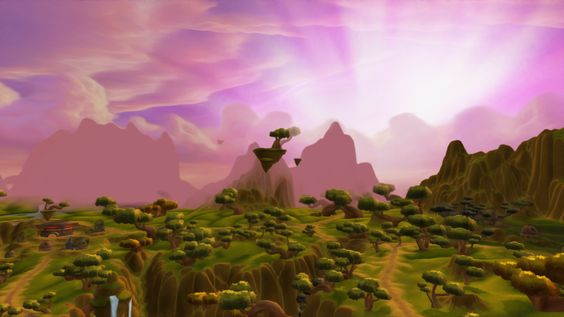
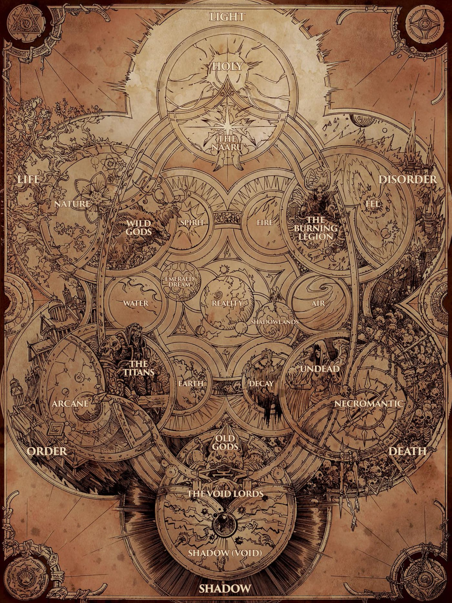
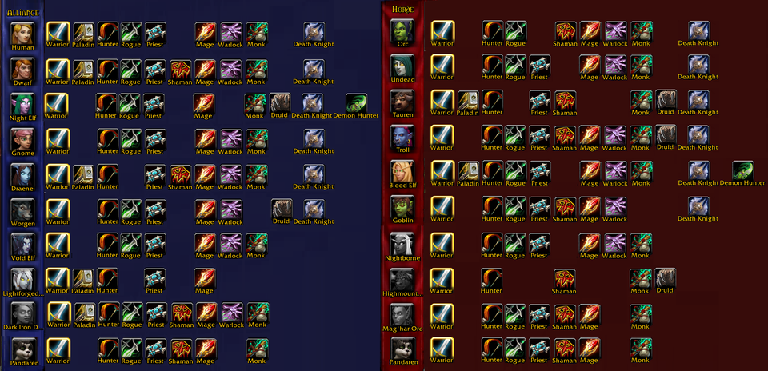

Mi is a Warcraft?
- Egy játék!
- Egy Életmód!
- Felejthetelen emlékek!
- Életreszóló barátságok!
- 10 millió játékos világszerte!
- Verseny!
- Művészet!
- Közösség!
- Öröm!
- Dráma!
- Bajtársiasság!
- TÖRTÉNET!
Rövid történet!
A startégia királya.
A Wacraft a Blizzard álltal kiadott, egy 1994-ben megjelent Warcraft: Orcs & Humans RTS játékkal kezdte pályafutását, melyet népszerűsége miatt már 1995-ben követett a Warcraft II: Tides of darknes, kiegészítője a Warcraft II: Beyond the Dark Portal. A sorozat rajongóinak egészen 2002-ig kellett várniuk a következő részig a Warcraft III: Reign of Chaos-ra, mely a sorozat történetében először előre renderelt átvezetőket tartalmazott. A játék sikerére építve már 2003-ban kiadták kiegészzítőjét a Warcraft III: The Frozen Throne-t, ami látszóléag lezárta, de mégis nyitva hagyta új és régi kedvenceink történetét.
World of Warcraft.
Kezdetektől napjainkig.
A startégiai játékok előre felélpített világra alapozva a Blizzard 2004-ben kiadta a World of Wacraft névre hallgató MMORPG játékot. Melynek népszerűsége napról napra nőt. Számos kiegészítővel bővűlt az évek alatt 2007-ben a World of Warcraft: The Burning Crusade, majd 2008-ban a World of Warcraft: Wrath of the Lich King, 2010-be a World of Warcraft: Cataclysm, 2012-ben a World of Warcraft: Mists of Pandaria, 2014-ben a World of Warcraft: Warlords of Draenor, 2016-ban a World of Warcraft: Legion, 2018-ban a World of Warcraft: Battle for Azeroth, és 2020-ban a legújabb a World of Warcraft: Shadowlands.
Mi teszi a Warcraftot olyan naggyá amilyen?
Gyönyörű világ!
- 100+ szabadon bejárható és felfedezhető egyedi terület!
- Folyton változó és élő világ!
- Minden látvány egy új élmény!
Heves történet!
- 25 évnyi történet egy helyen!
- Számtalan egyedi és érdekes karakter mind a hősök és gonoszok oldalán!
- Légy részese egy egyedűlálló kalandnak!
Változatos játékélmény!
- 2 frakció, 12-12 faj!
- 12 kaszt összesen 36 specializációval!
- Változatos kűldetések!
- Magávalragadó végjáték!
- Te mit választasz? For the Alliance! vagy, For the Horde!?